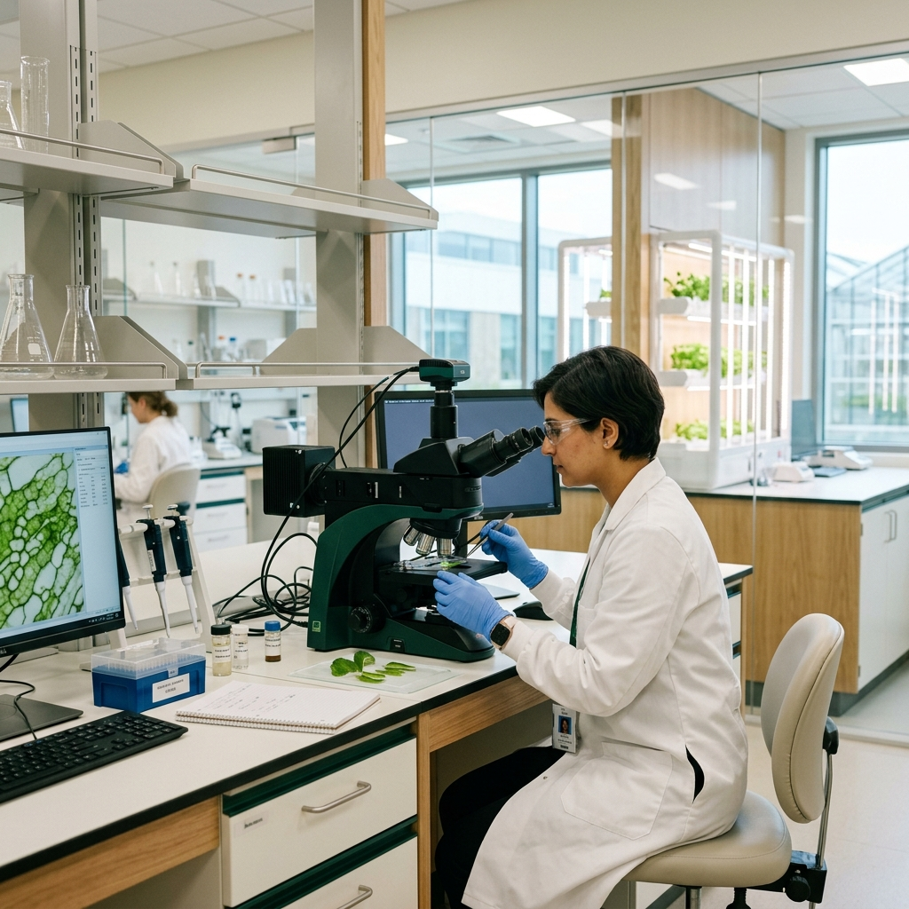
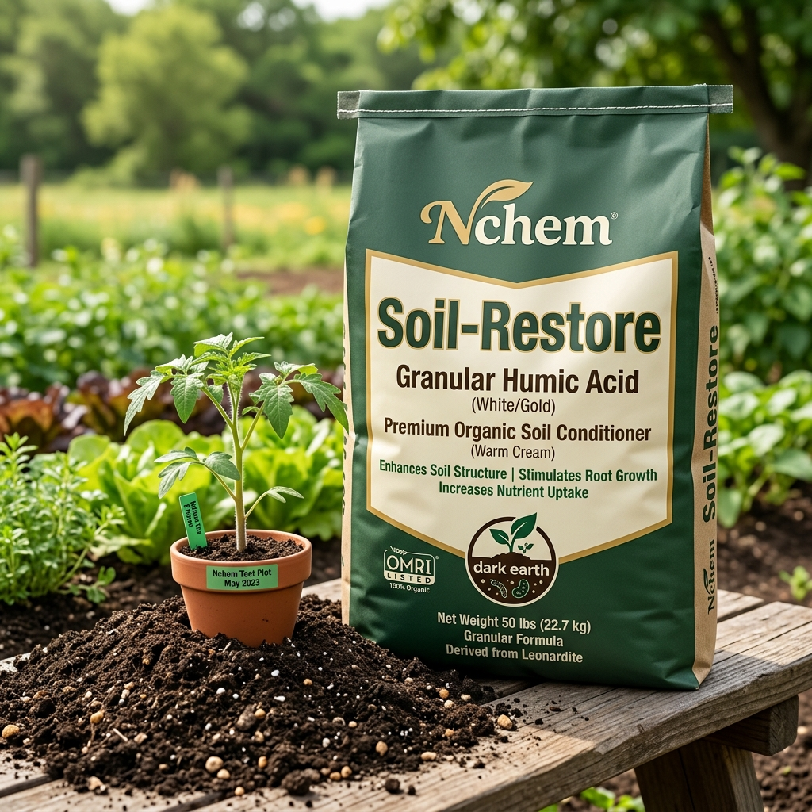
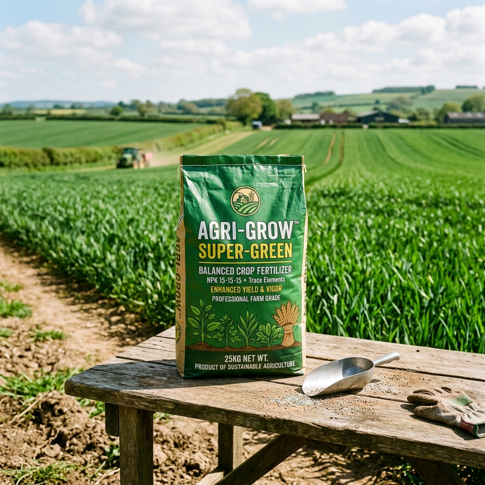
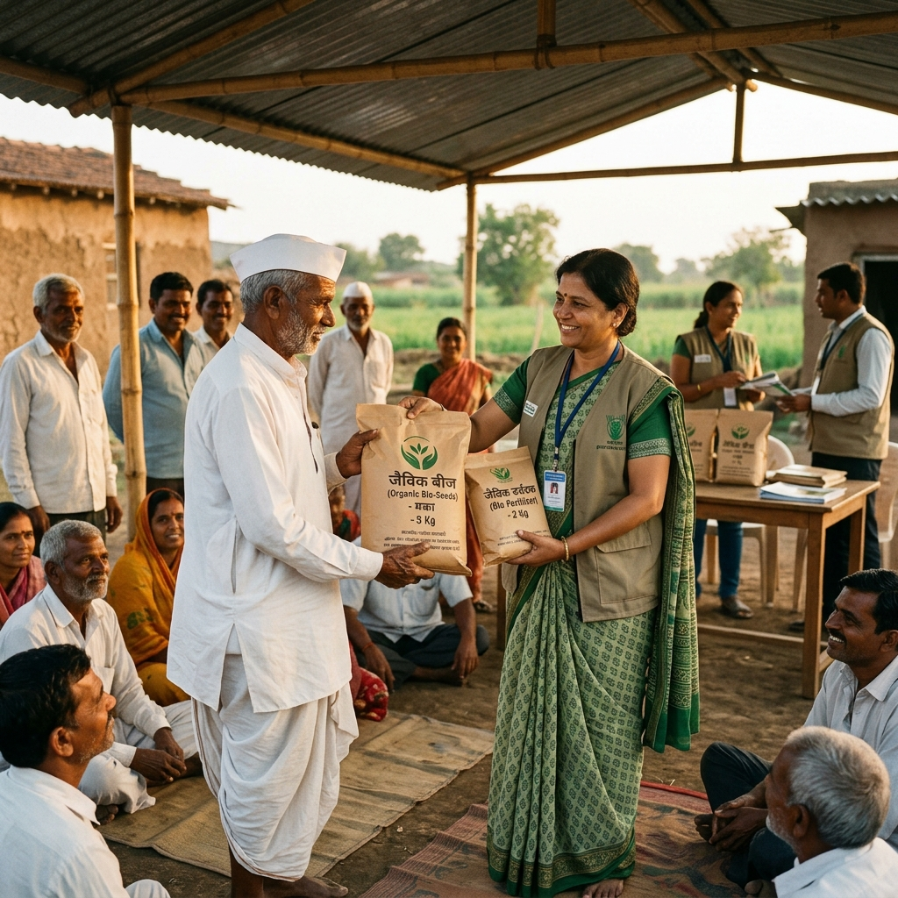

Engineering Biological Sovereignty & Sustainable Living Soil
For over four decades, Nchem Sciences has been an Indian pioneer in industrial-scale microbial biotechnology, certified bio-fertilizers, biological crop protection consortia, precision chelated micronutrients, and zero-residue plant nutrition. Partnering with state agro corporations, commercial estates, and enterprise agribusinesses across 28 Indian states.
From Aseptic Lab to Bountiful Harvest:
The Story of Soil Transformation & Farmer Prosperity
Discover how four decades of Indian agri-biotechnology heritage journey from molecular microbial isolation in Hyderabad to industrial fermentation, village field trials, and the radiant smiles of thriving farming families.
Where Living Science Begins: High-Potency Rhizosphere Microbial Genomics
Every breakthrough begins under laminar airflow hoods at our Ameenpur biotechnology campus in Hyderabad. Our doctoral microbiologists isolate and cultivate indigenous, hyper-resilient soil bacterial and fungal strains—selecting hyper-potent Nitrogen fixers (Rhizobium, Azotobacter) and Phosphate solubilizers (PSB, VAM) genetically pre-conditioned to withstand semi-arid Indian heat, salinity, and erratic rainfall.

“Every potent bio-input starts with genetic purity. We ensure that only the most resilient native strains reach Indian soils.”
— Dr. K. Ramanathan, Head of Biotechnology R&DPrecision Bio-Fermentation: Scaling Living Biology to Industrial Tonnage
Transitioning delicate microbial consortia from petri dish to high-volume commercial production requires immaculate engineering. Inside our aseptic stainless-steel deep-tank bioreactors, computer-governed cascades regulate dissolved oxygen saturation, thermodynamic temperature curves, and organic nutrient feeds—nurturing trillions of beneficial living cells in aseptic harmony.

“Industrial bio-fermentation is a delicate science. Our closed-loop bioreactors replicate the pristine biology of virgin forest soil at industrial scale.”
— Plant Operations & Bioprocess DirectorateUV-Barrier Stabilization & Batch-Level FCO Certified Integrity
Bio-inputs contain active living organisms that perish if exposed to oxygen spikes or solar UV radiation. Nchem formulates with specialized natural osmoprotectants that induce safe microbial dormancy until applied to moist soil. Packaged into UV-blocking HDPE containers with micro-porous breathable caps, every batch undergoes HPLC assay before receiving an official FCO Certificate of Analysis (COA).

“When a farmer unseals a container 6 months after dispatch, the viable microbial count must match the exact lab benchmark brewed in Hyderabad.”
— QA/QC Chief ControllerAgronomists in the Field: Soil Health Audits & Village Trials
True agricultural science does not end at the factory gates. Nchem maintains active agronomist field stations across 28 Indian states, working hand-in-hand with primary agricultural cooperative societies and village farm communities. We conduct rapid on-farm soil pH and organic carbon audits, demonstrating exact microbial seed coating, root drenching, and drip fertigation timing.

“When we stand in the field beside the farmer and show how living microbes loosen compacted soil, scientific belief becomes farmer trust.”
— Senior Agronomist, Telangana & Andhra ExtensionBountiful Yields, Living Soil Regeneration & Radiant Farmer Smiles
The ultimate proof of our laboratory science is revealed at harvest time: massive fibrous root systems holding crumbly, humus-rich living soil, pest-resilient dark green canopies, heavy grain and fruit filling, and premium market prices. Best of all, it shines in the radiant smiles of farming families who reduce costly synthetic chemicals while building generational wealth.
“For years our soil felt hardened and tired. With Nchem bio-fertilizers, our soil breathed again, earthworms returned, and our harvest brought true happiness to our family!”
— Ramesh & Suneetha Reddy, Progressive Chilli & Cotton FarmersA Four-Decade Commitment to Regenerative Agricultural Biotechnology
Founded in 1984 under the stewardship of Datla Balarama Raju, Nchem Sciences was established on the fundamental premise that long-term agricultural prosperity depends on living soil biology rather than continuous synthetic chemical overload.
Headquartered in Ameenpur, Hyderabad, Nchem pioneers microbial fermentation and precision nutrient synthesis. By cultivating symbiotic bacterial and fungal consortia, we engineer bio-formulations that unlock trapped soil nutrients, re-establish microbial rhizosphere equilibrium, and dramatically improve crop nutrient use efficiency (NUE).
6 Core Agri-Biotechnology Disciplines
Our 121 certified formulations are developed across six specialized scientific verticals, engineered in high-capacity fermentation bioreactors and precision synthesis facilities in Hyderabad.
Microbial Inoculants & Bio-Fertilizers
High-potency living bacterial and fungal inoculants including symbiotic Nitrogen Fixers, Phosphate Solubilizers (PSB), Potash Mobilizers (KMB), and Mycorrhizal root colonizers.
Biological Plant Protection & Bio-Pesticides
Certified biocontrol agents and botanicals offering broad-spectrum defense against fungal blights, bacterial wilts, sucking pests, and root nematodes with zero synthetic chemical residue.
Crop Lifecycle Precision Nutrition
Targeted Special I–IV physiological stage kits synchronized to critical phenological stages (Vegetative, Pre-Flowering, Fruit Setting, Maturation) for commercial horticulture and cash crops.
Chelated Micronutrients & Secondary Minerals
Fully chelated, highly soluble trace mineral formulations (Zinc, Iron, Boron, Manganese, Copper, Molybdenum) engineered with amino acid and EDTA carriers for zero-fixation rapid leaf absorption.
100% Water-Soluble Technical NPKs
High-purity crystalline macro-nutrient complexes designed for pressurized drip fertigation and foliar spray systems, characterized by near-zero biuret, low EC, and 100% water solubility.
Specialty Silicon Adjuvants & Surfactants
Next-generation organosilicone super-spreaders, penetration enhancers, and abiotic stress alleviators reducing droplet contact angles to facilitate instant cuticular entry of active inputs.
Corporate Services & Institutional Capabilities
We deliver industrial-scale manufacturing, private-label formulation, government tender execution, and enterprise agronomy advisory to domestic and international agricultural enterprises.
B2B Contract Manufacturing & White-Labeling
Full-scale toll manufacturing and private-label synthesis for agrochemical conglomerates, seed companies, and retail brands seeking high-potency bio-formulations.
- Custom bacterial and fungal fermentation to client CFU density specifications.
- Cold-process liquid toll blending, chelation synthesis, and dry powder micronization.
- Automated nitrogen-flushed bottling (100ml to 200L drums) and pouch packaging.
- Rigorous formulation confidentiality under bilateral Non-Disclosure Agreements (NDAs).
Institutional Bulk Supply & Government Tenders
Turnkey volume supply contracts engineered to meet the stringent technical, regulatory, and logistical requirements of state agencies and commercial plantations.
- State Agro Industries Corporations & State Horticulture Missions tender supply.
- Bulk multi-metric-ton consignments for commercial Sugar Mills, Tea, and Coffee Estates.
- Comprehensive FCO compliance dossiers, batch test certificates, and COA validation.
- Dedicated multi-axle freight logistics with regional depot dispatch capabilities.
Precision Agronomy & Enterprise Soil Intelligence
Scientific diagnostic and agronomic advisory packages designed to optimize input efficiency, restore degraded soils, and maximize harvest quality across large acreage.
- Soil microbial assay profiling, active carbon evaluation, and EC/pH balancing.
- Custom physiological crop nutrition charts tailored to local soil chemistry.
- On-ground agronomy workshops and field demonstration protocols for FPOs.
- Continuous seasonal monitoring and tissue testing recommendations.
Pan-India Distribution & Channel Partnerships
Established commercial distribution network connecting registered agro-dealers, district cooperatives, and retail stockists with authentic bio-fertilizers.
- 12,000+ registered distribution touchpoints covering 600+ agricultural districts.
- Competitive, tiered commercial dealer margins and early-season booking incentives.
- Regional stock warehousing in Hyderabad, Vijayawada, Pune, Indore, and Bengaluru.
- Comprehensive brand enablement, farmer meetups, and regional retail merchandising.
Logistics Footprint & Distribution Reach
From our primary production campus in Hyderabad, Nchem operates regional buffer depots and distribution networks supporting institutional clients across 28 Indian states.
Corporate Governance & Regulatory Credentials
Nchem Sciences conducts operations in full compliance with central and state agricultural regulatory frameworks, environmental statutes, and commercial standards.
Ameenapur, Hyderabad,
Sangareddy District, Telangana — 502 033, India
Partner With Nchem Sciences
Whether you represent a state agro enterprise, agrochemical manufacturer seeking toll-blending, or an agricultural cooperative federation, our enterprise relations desk is prepared to assist with technical dossiers, pricing schedules, and contract specifications.